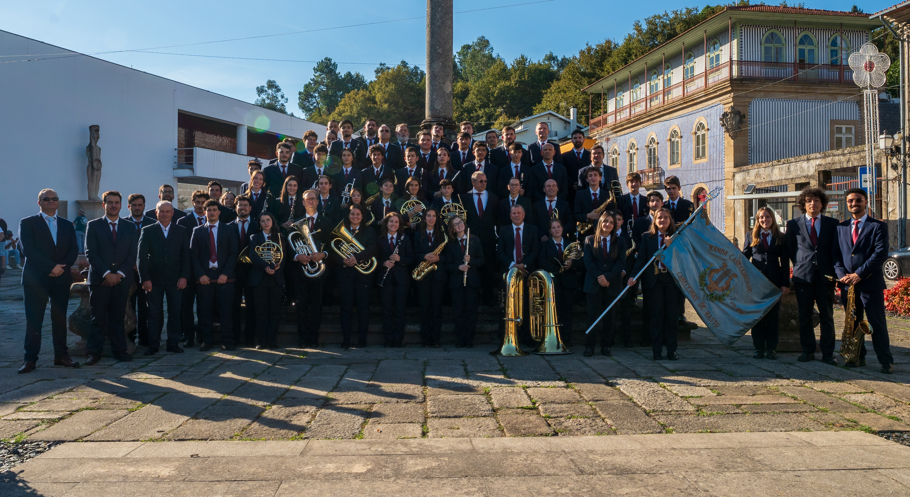

Banda Cabeceirense
Site OficialEm destaque
A Bicentenária das terras de Basto
Da fundação à atualidade: a História que nos define, os Músicos que nos dão voz e a Direção que assegura o rumo.
Vídeos
Em destaque
Uma seleção das últimas atuações! Assiste no YouTube e acompanha a Banda.


Parcerias
Apoios e parceiros
A Banda Cabeceirense agradece o apoio dos parceiros que contribuem para a cultura e formação musical em Cabeceiras de Basto. Se a sua entidade pretende associar-se, contacte-nos através da página de Contactos.